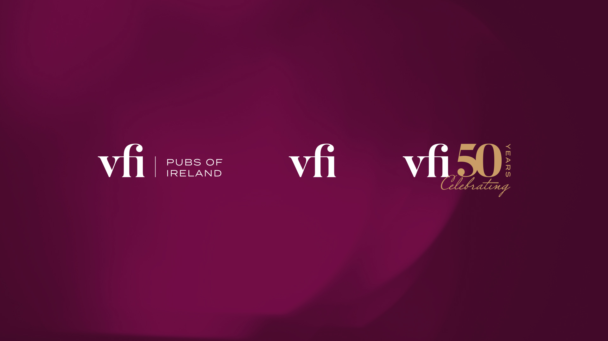
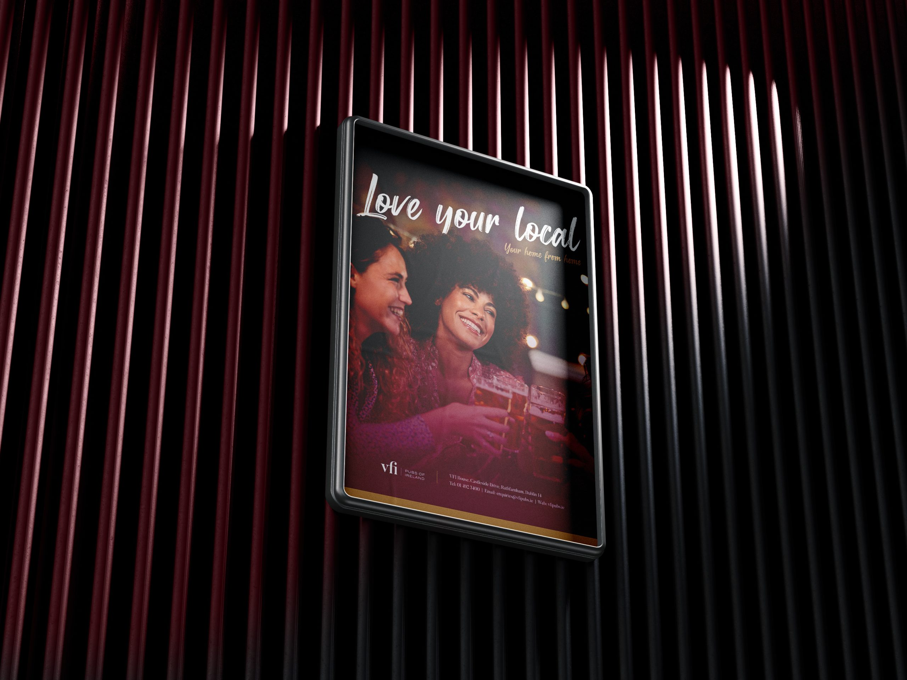
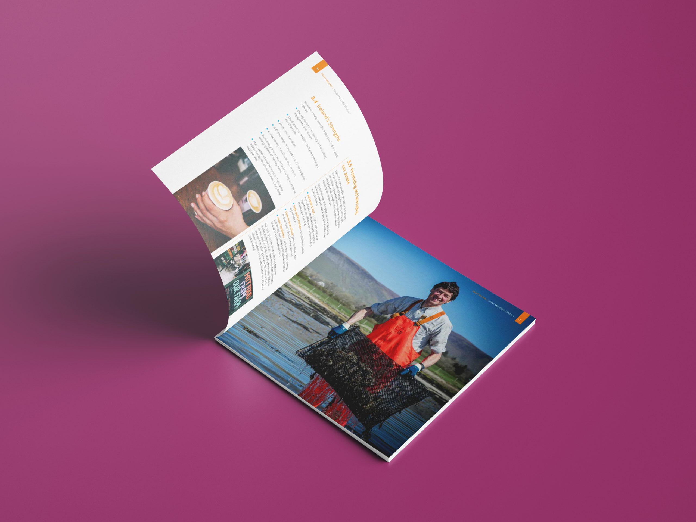
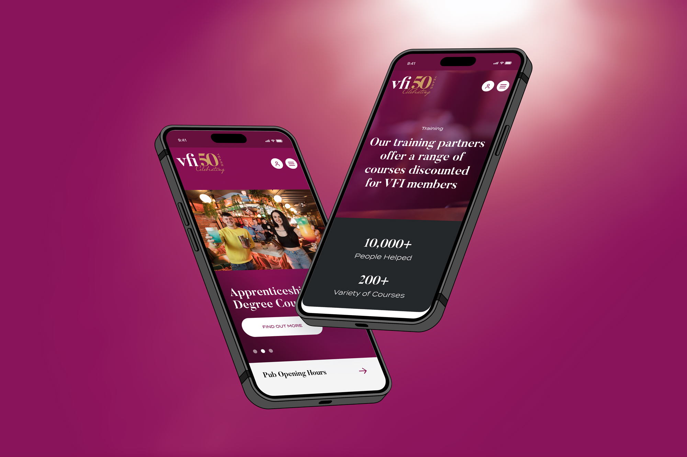
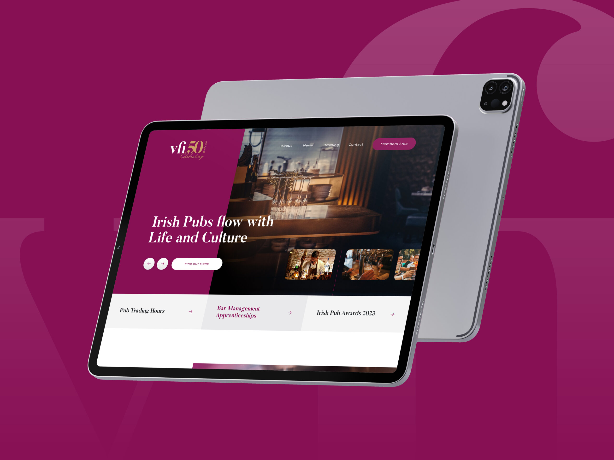
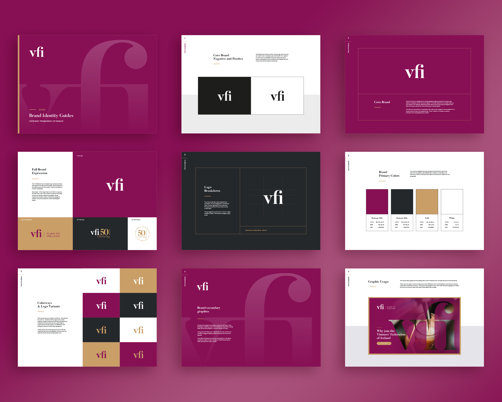

Work / 2023
VFI
Irish Pubs flow with Life and Culture
The Vintners' Federation of Ireland represents more than 5,000 publicans outside the Greater Dublin Area. I helped VFI move from paper-based workflows to a two-part digital platform, a public site for news, training and advocacy, and a secure members' portal for sign-up, renewals, resources and confidential support.

A clearer voice for Irish pubs
I framed the digital brand around VFI's mantra (Support, Represent, Stronger Together) and built a practical publishing toolkit: news posts, training updates, email templates and printable signage for member premises, so communications feel consistent, credible and community-first.




Designing the member journeys
The platform is organised around priority journeys: join and renew, members' login, training and events, news and press, supplier benefits and sector guidance. The members' area uses role-based, tiered access with e-commerce for subscriptions, backed by hosting, security and GDPR controls for confidential material.
Impact
Faster onboarding and far fewer manual processes for the VFI team; clearer journeys that surface the right help at the right time; and a stronger, more consistent public presence supporting advocacy, with analytics-ready workflows that record member issues to underpin evidence-based campaigning.
